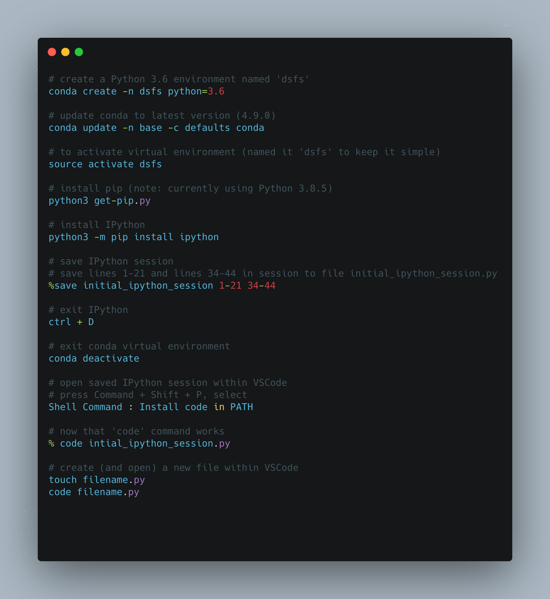
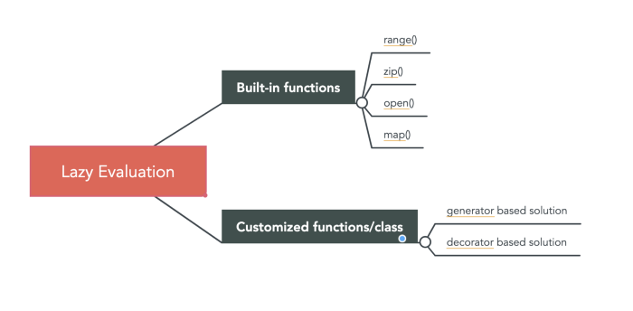

Data Science from Scratch (ch2)
Python crash course
Table of Content:
- Set Up
- Functions
- Strings
- Exceptions
- Lists
- Tuples
- Dictionaries
- defaultdict
- Counters
- Sets
- Control Flow
- Truthiness
- Sorting
- List Comprehensions
- Assert
- Object-Oriented Programming
- Iterables & Generators
- Pseudorandomness
- Regular Expression
Chapter 2: A Crash Course in Python
This is the first of many chapters i’ll be covering from Joel Grus’ Data Science from Scratch book (2nd edition). This chapter provides a quick survey of python features needed for “doing” data science from scratch, including essential setup of virtual environments and other tooling.
While the chapter is not meant to be comprehensive, I may supplement certain sections with external content for greater detail in certain parts.
My goal is twofold. First, to go through this book and, as a byproduct, learn python. Second, to look out for and highlight the areas where the pythonic way of doing things is necessary to accomplish something in the data science process.
At several sections throughout this chapter, the author emphasises how much a particular feature will be used later in the book (e.g., functions, dictionaries, list, list comprehensions (and for-loops), assert, iterables and generators, randomness, type annotations). Things not used as much (e.g., sets, automated test, subclasses that inherit functionality from a parent class, zip and argument unpacking, args, kwargs).
Additional code can be found in this repo
Setup
Installation, Virtual Environment and Modules
These section takes the reader through installing a virtual environment using Anaconda Python distribution. The author points out a best practice, “you should always work in a virtual environment and never use ‘base’ Python installation”. Moreover, the author favors IPython over jupyter notebooks (he’s a noted critic of the notebook)
Jeremy Howard of fast.ai offers a contrasting perspective. He does like notebooks.
The first time I installed Python, it took me awhile to get things right and eventually I relied on jupyter notebooks through Anaconda. As we go through this book, I’ll be using virtual environments and IPython as much as I can (although I may sprinkle in a notebook here and there). My IDE for interacting with the conda virtual environment and IPython will be VSCode.
Fortunately, I had a relatively painless process setting up a virtual environment and IPython, although I had to take a slight detour to setup the code command for VSCode.
Here’s a summary of the commands I used for setup:

Functions
Three things are emphasized here: passing functions as arguments for other functions, lambda functions and default parameter values.
The illustration of functions being passed as arguments is demonstrated below. A function double is created. A function apply_to_one is created. The double function is pointed at my_double. We pass my_double into the apply_to_one function and set that to x.
Whatever function is passed to apply_to_one, its argument is 1. So passing my_double means we are doubling 1, so x is 2.
But the important thing is that a function got passed to another function (aka higher order functions).
def double(x):
"""
this function doubles and returns the argument
"""
return x * 2
def apply_to_one(f):
"""Calls the function f with 1 as its argument"""
return f(1)
my_double = double
# x is 2 here
x = apply_to_one(my_double)
# extending this example
def apply_five_to(e):
"""returns the function e with 5 as its argument"""
return e(5)
# doubling 5 is 10
w = apply_five_to(my_double)
Since functions are going to be used extensively, here’s another more complicated example. I found this from
Trey Hunner’s site. Two functions are defined - square and cube. Both functions are saved to a list called operations. Another list, numbers is created.
Finally, a for-loop is used to iterate through numbers, and the enumerate property allows access to both index and item in numbers. That’s used to find whether the action is a square or cube (operations[0] is square, operations[1] is cube), which is then given as its argument, the items inside the numbers list.
# create two functions
def square(n): return n**2
def cube(n): return n**3
# store those functions inside a list, operations, to reference later
operations = [square, cube]
# create a list of numbers
numbers = [2,1,3,4,7,11,18,29]
# loop through the numbers list
# using enumerate the identify index and items
# [i % 2] results in either 0 or 1, that's pointed at action
# using the dunder, name, retrieves the name of the function - either square or cube - from the operations list
# print __name__ along with the item from the numbers list
# action is either a square or cube
for i, n in enumerate(numbers):
action = operations[i % 2]
print(f"{action.__name__}({n}):", action(n))
# print
square(2): 4
cube(1): 1
square(3): 9
cube(4): 64
square(7): 49
cube(11): 1331
square(18): 324
cube(29): 24389
# more explicit, yet verbose way to write the for-loop
for index, num in enumerate(numbers):
action = operations[index % 2]
print(f"{action.__name__}({num}):", action(num))
This section also introduces lambda functions (aka anonymous functions) to demonstrate how functions, being first-class in Python, can, like any variable, be passed into the argument of another function. However, with lambda instead of defining functions with def, it is defined inside another function. Here’s an illustration:
# we'll reuse apply_five_to, which takes in a function and provides '5' as the argument
def apply_five_to(e):
"""returns the function e with 5 as its argument"""
return e(5)
# this lambda function adds '4' to any argument
# when passing this lambda function to apply_five_to
# you get y = 5 + 4
y = apply_five_to(lambda x: x + 4)
# we can also change what the lambda function does without defining a separate function
# here the lambda function multiplies the argument by 4
# y = 20
y = apply_five_to(lambda x: x * 4)
Lambda functions are convenient in that you can pass it into another function immediately without having to define it separately, but the consensus seems to be that you should just use def.
Here’s an external example of lambda functions from
Trey Hunner. In this example, a lambda function is used within a filter function that takes in two arguments.
# calling help(filter) displays an explanation
class filter(object)
| filter(function or None, iterable) --> filter object
# create a list of numbers
numbers = [2,1,3,4,7,11,18,29]
# the lambda function will return n if it is an even number
# we filter the numbers list using the lambda function
# wrapped in a list, this returns [2,4,18]
list(filter(lambda n: n % 2 == 0, numbers))
There are whole books, or at least whole chapters, that can be written about Python functions, but we’ll limit our discussion for now to the idea that functions can be passed as arguments to other functions. I’ll report back on this section as we progress through the book.
Strings
Strings may not be terribly exciting for data science or machine learning, unless you’re getting into natural language processing, so we’ll keep it brief here. The key take aways are that backslashes encode special characters and that f-strings is the most updated way to do string interpolation. Here are some examples:
# point strings to variables (we'll use my name)
first_name = "Paul"
last_name = "Apivat"
# f-string (recommended), 'Paul Apivat'
f_string = f"{first_name} {last_name}"
# string addition, 'Paul Apivat'
string_addition = first_name + " " + last_name
# string format, 'Paul Apivat'
string_format = "{0} {1}".format(first_name, last_name)
# percent format (NOT recommended), 'Paul Apivat'
pct_format = "%s %s" %('Paul','Apivat')
Exceptions
The author covers exceptions to make the point that they’re not all that bad in Python and it’s worth handling exceptions yourself to make code more readable. Here’s my own example that’s slightly different from the book:
integer_list = [1,2,3]
heterogeneous_list = ["string", 0.1, True]
# you can sum a list of integers, here 1 + 2 + 3 = 6
sum(integer_list)
# but you cannot sum a list of heterogeneous data types
# doing so raises a TypeError
sum(heterogeneous_list)
# the error crashes your program and is not fun to look at
---------------------------------------------------------------------------
TypeError Traceback (most recent call last)
<ipython-input-12-3287dd0c6c22> in <module>
----> 1 sum(heterogeneous_list)
TypeError: unsupported operand type(s) for +: 'int' and 'str'
# so the idea is to handle the exceptions with your own messages
try:
sum(heterogeneous_list)
except TypeError:
print("cannot add objects of different data types")
At this point, the primary benefits to handling exceptions yourself is for code readability, so we’ll come back to this section if we see more useful examples.
Lists
Lists are fundamental to Python so I’m going to spend some time exploring their features. For data science, NumPy arrays are used frequently, so I thought it’d be good to implement all list operations covered in this section in Numpy arrays to tease apart their similarities and differences.
Below are the similarities.
This implies that whatever can be done in python lists can also be done in numpy arrays, including: getting the nth element in the list/array with square brackets, slicing the list/array, iterating through the list/array with start, stop, step, using the in operator to find list/array membership, checking length and unpacking list/arrays.
# setup
import numpy as np
# create comparables
python_list = [1,2,3,4,5,6,7,8,9]
numpy_array = np.array([1,2,3,4,5,6,7,8,9])
# bracket operations
# get nth element with square bracket
python_list[0] # 1
numpy_array[0] # 1
python_list[8] # 9
numpy_array[8] # 9
python_list[-1] # 9
numpy_array[-1] # 9
# square bracket to slice
python_list[:3] # [1, 2, 3]
numpy_array[:3] # array([1, 2, 3])
python_list[1:5] # [2, 3, 4, 5]
numpy_array[1:5] # array([2, 3, 4, 5])
# start, stop, step
python_list[1:8:2] # [2, 4, 6, 8]
numpy_array[1:8:2] # array([2, 4, 6, 8])
# use in operator to check membership
1 in python_list # true
1 in numpy_array # true
0 in python_list # false
0 in numpy_array # false
# finding length
len(python_list) # 9
len(numpy_array) # 9
# unpacking
x,y = [1,2] # now x is 1, y is 2
w,z = np.array([1,2]) # now w is 1, z is 2
Now, here are the differences.
These tasks can be done in python lists, but require a different approach for NumPy array including: modification (extend in list, append for array). Finally, lists can store mixed data types, while NumPy array will convert to string.
# python lists can store mixed data types
heterogeneous_list = ['string', 0.1, True]
type(heterogeneous_list[0]) # str
type(heterogeneous_list[1]) # float
type(heterogeneous_list[2]) # bool
# numpy arrays cannot store mixed data types
# numpy arrays turn all data types into strings
homogeneous_numpy_array = np.array(['string', 0.1, True]) # saved with mixed data types
type(homogeneous_numpy_array[0]) # numpy.str_
type(homogeneous_numpy_array[1]) # numpy.str_
type(homogeneous_numpy_array[2]) # numpy.str_
# modifying list vs numpy array
# lists can use extend to modify list in place
python_list.extend([10,12,13]) # [1, 2, 3, 4, 5, 6, 7, 8, 9, 10, 12, 13]
numpy_array.extend([10,12,13]) # AttributeError: 'numpy.ndarray'
# numpy array must use append, instead of extend
numpy_array = np.append(numpy_array,[10,12,13])
# python lists can be added with other lists
new_python_list = python_list + [14,15] # [1, 2, 3, 4, 5, 6, 7, 8, 9, 10, 12, 13, 14, 15]
numpy_array + [14,15] # ValueError
# numpy array cannot be added (use append instead)
# array([ 1, 2, 3, 4, 5, 6, 7, 8, 9, 10, 12, 13, 14, 15])
new_numpy_array = np.append(numpy_array, [14,15])
# python lists have the append attribute
python_list.append(0) # [1, 2, 3, 4, 5, 6, 7, 8, 9, 10, 12, 13, 0]
# the append attribute for numpy array is used differently
numpy_array = np.append(numpy_array, [0])
Python lists and NumPy arrays have much in common, but there are meaningful differences as well.
Python Lists vs NumPy Arrays: What’s the difference
Now that we know that there are meaningful differences, what can we attribute these differences to? This explainer from UCF highlights performance differences including:
- Size
- Performance
- Functionality
I’m tempted to go down this 🐇 🕳️ of further lists vs array comparisons, but we’ll hold off for now.
Tuples
Similar to lists, but tuples are immutable.
my_list = [1,2] # check type(my_list)
my_tuple = (1,2) # check type(my_tuple)
other_tuple = 3,4 # tuples don't require parentheses
my_list[1] = 3 # lists ARE mutable, my_list is now [1,3]
# exception handling when trying to change tuple
try:
my_tuple[1] = 3
except TypeError:
print("tuples are immutable")
Tuples are good at returning multiple values from functions:
# use tuple to return multiple values
def sum_and_product(x,y):
"""you can return multiple values from functions using tuples"""
return (x + y), (x * y)
sp = sum_and_product(4,5) # sp is (9,20), a tuple
However, lists can also be used to return multiple values:
def sum_and_product_list(x,y):
return [(x + y), (x * y)]
spl = sum_and_product_list(5,6) # [11, 30]
type(spl) # list
Finally, both tuples and lists can be used for multiple assignments, here’s a pythonic way to swap variables:
x, y = 1,2
x,y = y,x
Tuples, for the most part, seem to be redundant with lists, but we’ll see if there are special use-cases for immutability down the line.
Dictionaries
Dictionaries are good for storing structured data. They have a key/value pair so you can look up values of certain keys. The author provides some ways to initialize a dictionary, with comments about what is more or less pythonic (I’ll take the author’s word for it, but open to other perspectives).
Some of the things you can do with dictionaries are query keys, values, assign new key/value pairs, check for existence of keys or retrieve certain values.
empty_dict = {} # most pythonic
empty_dict2 = dict() # less pythonic
grades = {"Joel": 80, "Grus": 99} # dictionary literal
type(grades) # type check, dict
# use bracket to look up values
grades["Grus"] # 99
grades["Joel"] # 80
# KeyError for looking up non-existent keys
try:
kate_grades = grades["Kate"]
except KeyError:
print("That key doesn't exist")
# use in operator to check existence of key
joe_has_grade = "Joel" in grades
joe_has_grade # true
kate_does_not = "Kate" in grades
kate_does_not # false
# use 'get' method to get values in dictionaries
grades.get("Joel") # 80
grades.get("Grus") # 99
grades.get("Kate") # default: None
# assign new key/value pair using brackets
grades["Tim"] = 93
grades # {'Joel': 80, 'Grus': 99, 'Tim': 93}
Dictionaries are good for representing structured data that can be queries. The key take-away here is that in order to iterate through dictionaries to get either keys, values or both, we’ll need to use specific methods likes keys(), values() or items().
tweet = {
"user": "paulapivat",
"text": "Reading Data Science from Scratch",
"retweet_count": 100,
"hashtags": ["#66daysofdata", "datascience", "machinelearning", "python", "R"]
}
# query specific values
tweet["retweet_count"] # 100
# query values within a list
tweet["hashtags"] # ['#66daysofdata', 'datascience', 'machinelearning', 'python', 'R']
tweet["hashtags"][2] # 'machinelearning'
# retrieve ALL keys
tweet_keys = tweet.keys()
tweet_keys # dict_keys(['user', 'text', 'retweet_count', 'hashtags'])
type(tweet_keys) # different data type: dict != dict_keys
# retrieve ALL values
tweet_values = tweet.values()
tweet_values # dict_values(['paulapivat', 'Reading Data Science from Scratch', 100, ['#66daysofdata', 'datascience', 'machinelearning', 'python', 'R']])
type(tweet_values) # different data type: dict != dict_values
# create iterable for Key-Value pairs (in tuple)
tweet_items = tweet.items()
# iterate through tweet_items()
for key,value in tweet_items:
print("These are the keys:", key)
print("These are the values:", value)
# cannot iterate through original tweet dictionary
# ValueError: too many values to unpack (expected 2)
for key, value in tweet:
print(key)
# cannot use 'enumerate' because that only provides index and key (no value)
for key, value in enumerate(tweet):
print(key) # print 0 1 2 3 - index values
print(value) # user text retweet_count hashtags (incorrectly print keys)
Just like in lists and tuples, you can use the in operator to find membership. The one caveat is you cannot look up values that are in lists, unless you use bracket notation to help.
# search keys
"user" in tweet # true
"bball" in tweet # false
"paulapivat" in tweet_values # true
'python' in tweet_values # false (python is nested in 'hashtags')
"hashtags" in tweet # true
# finding values inside a list requires brackets to help
'python' in tweet['hashtags'] # true
What is or is not hashable?
Dictionary keys must be hashable.
Strings are hashable. So we can use strings as dictionary keys, but we cannot use lists because they are not hashable.
paul = "paul"
type(paul) # check type, str
hash(paul) # -3897810863245179227 ; strings are hashable
paul.__hash__() # -3897810863245179227 ; another way to find the hash
jake = ['jake'] # this is a list
type(jake) # check type, list
# lists are not hashable - cannot be used as dictionary keys
try:
hash(jake)
except TypeError:
print('lists are not hashable')
defaultdict
defaultdict is a subclass of dictionaries (dict, see previous post), so it inherits most of its behavior from dict with additional features. To understand how those features make it different, and more convenient in some cases, we’ll need to run into some errors.
If we try to count words in a document, the general approach is to create a dictionary where the dictionary keys are words and the dictionary values are counts of those words.
Let’s try do do this with a regular dictionary.
First, to setup, we’ll take a list of words and split() into individual words. I took this paragraph from
another project i’m working on and artificially added some extra words to ensure that certain words appeared more than once (it’ll be apparent why soon).
# paragraph
lines = ["This table highlights 538's new NBA statistic, RAPTOR, in addition to the more established Wins Above Replacement (WAR). An extra column, Playoff (P/O) War, is provided to highlight stars performers in the post-season, when the stakes are higher. The table is limited to the top-100 players who have played at least 1,000 minutes minutes the table Wins NBA NBA RAPTOR more players"]
# split paragraphy into individual words
lines = " ".join(lines).split()
type(lines) # list
Now that we have our lines list, we’ll create an empty dict called word_counts and have each word be the key and each value be the count of that word.
# empty list
word_counts = {}
# loop through lines to count each word
for word in lines:
word_counts[word] += 1
# KeyError: 'This'
We received a KeyError for the very first word in lines (i.e. ‘This’) because the list tried to count a key that didn’t exist. We’ve learned to handle exceptions so we can use try and except.
Here, we’re looping through lines and when we try to count a key that doesn’t exist, like we did previously, we’re now anticipating a KeyError and will set the initial count to 1, then it can continue to loop-through and count the word, which now exists, so it can be incremented up.
# empty list
word_counts = {}
# exception handling
for word in lines:
try:
word_counts[word] += 1
except KeyError:
word_counts[word] = 1
# call word_counts
# abbreviated for space
word_counts
{'This': 1,
'table': 3,
'highlights': 1,
"538's": 1,
'new': 1,
'NBA': 3,
'statistic,': 1,
'RAPTOR,': 1,
'in': 2,
'addition': 1,
'to': 3,
'the': 5,
'more': 2,
...
'top-100': 1,
'players': 2,
'who': 1,
'have': 1,
'played': 1,
'at': 1,
'least': 1,
'1,000': 1,
'minutes': 2,
'RAPTOR': 1}
Now, there are other ways to achieve the above:
# use conditional flow
word_counts = {}
for word in lines:
if word in word_counts:
word_counts[word] += 1
else:
word_counts[word] = 1
# use get
for word in lines:
previous_count = word_counts.get(word, 0)
word_counts[word] = previous_count + 1
Here’s where the author makes the case for defaultdict, arguing that the two aforementioned approaches are unweildy. We’ll come back full circle to try our first approach, using defaultdict instead of the traditional dict.
defaultdict is a subclass of dict and must be imported from collections:
from collections import defaultdict
word_counts = defaultdict(int)
for word in lines:
word_counts[word] += 1
# we no longer get a KeyError
# abbreviated for space
defaultdict(int,
{'This': 1,
'table': 3,
'highlights': 1,
"538's": 1,
'new': 1,
'NBA': 3,
'statistic,': 1,
'RAPTOR,': 1,
'in': 2,
'addition': 1,
'to': 3,
'the': 5,
'more': 2,
...
'top-100': 1,
'players': 2,
'who': 1,
'have': 1,
'played': 1,
'at': 1,
'least': 1,
'1,000': 1,
'minutes': 2,
'RAPTOR': 1})
Unlike a regular dictionary, when defaultdict tries to look up a key it doesn’t contain, it’ll automatically add a value for it using the argument we provided when we first created the defaultdict. If you see above, we entered an int as the argument, which allows it to automatically add an integer value.
If you want your defaultdict to have values be lists, you can pass a list as argument. Then, when you append a value, it is automatically contained in a list.
dd_list = defaultdict(list) # defaultdict(list, {})
dd_list[2].append(1) # defaultdict(list, {2: [1]})
dd_list[4].append('string') # defaultdict(list, {2: [1], 4: ['string']})
You can also pass a dict into defaultdict, ensuring that all appended values are contained in a dict:
dd_dict = defaultdict(dict) # defaultdict(dict, {})
# match key-with-value
dd_dict['first_name'] = 'lebron' # defaultdict(dict, {'first_name': 'lebron'})
dd_dict['last_name'] = 'james'
# match key with dictionary containing another key-value pair
dd_dict['team']['city'] = 'Los Angeles'
# defaultdict(dict,
# {'first_name': 'lebron',
# 'last_name': 'james',
# 'team': {'city': 'Los Angeles'}})
Application: Grouping with defaultdict
The follow example is from Real Python, a fantastic resource for all things Python.
It is common to use defaultdict to group items in a sequence or collection, setting the initial parameter (aka .default_factory) set to list.
dep = [('Sales', 'John Doe'),
('Sales', 'Martin Smith'),
('Accounting', 'Jane Doe'),
('Marketing', 'Elizabeth Smith'),
('Marketing', 'Adam Doe')]
from collections import defaultdict
dep_dd = defaultdict(list)
for department, employee in dep:
dep_dd[department].append(employee)
dep_dd
#defaultdict(list,
# {'Sales': ['John Doe', 'Martin Smith'],
# 'Accounting': ['Jane Doe'],
# 'Marketing': ['Elizabeth Smith', 'Adam Doe']})
What happens when you have duplicate entries? We’re jumping ahead slightly to use set handle duplicates and only group unique entries:
# departments with duplicate entries
dep = [('Sales', 'John Doe'),
('Sales', 'Martin Smith'),
('Accounting', 'Jane Doe'),
('Marketing', 'Elizabeth Smith'),
('Marketing', 'Elizabeth Smith'),
('Marketing', 'Adam Doe'),
('Marketing', 'Adam Doe'),
('Marketing', 'Adam Doe')]
# use defaultdict with set
dep_dd = defaultdict(set)
# set object has no attribute 'append'
# so use 'add' to achieve the same effect
for department, employee in dep:
dep_dd[department].add(employee)
dep_dd
#defaultdict(set,
# {'Sales': {'John Doe', 'Martin Smith'},
# 'Accounting': {'Jane Doe'},
# 'Marketing': {'Adam Doe', 'Elizabeth Smith'}})
Application: Accumulating with defaultdict
Finally, we’ll use defaultdict to accumulate values:
incomes = [('Books', 1250.00),
('Books', 1300.00),
('Books', 1420.00),
('Tutorials', 560.00),
('Tutorials', 630.00),
('Tutorials', 750.00),
('Courses', 2500.00),
('Courses', 2430.00),
('Courses', 2750.00),]
# enter float as argument
dd = defaultdict(float) # collections.defaultdict
# defaultdict(float, {'Books': 3970.0, 'Tutorials': 1940.0, 'Courses': 7680.0})
for product, income in incomes:
dd[product] += income
for product, income in dd.items():
print(f"Total income for {product}: ${income:,.2f}")
# Total income for Books: $3,970.00
# Total income for Tutorials: $1,940.00
# Total income for Courses: $7,680.00
I can see that defaultdict and dictionaries can be handy for grouping, counting and accumulating values in a column. We’ll come back to revisit these foundational concepts once the data science applications are clearer.
In summary, dictionaries and defaultdict can be used to group items, accumulate items and count items. Both can be used even when the key doesn’t (yet) exist, but its defaultdict handles this more succintly. For now, we’ll stop here and proceed to the next topic: counters.
Counters
Counter is a dict subclass for counting hashable objects (see
doc).
Back to our example in the previous section, we can use Counter instead of dict, specifically for counting:
from collections import Counter
# we can count the letters in this paragraph
count_letters = Counter("This table highlights 538's new NBA statistic, RAPTOR, in addition to the more established Wins Above Replacement (WAR). An extra column, Playoff (P/O) War, is provided to highlight stars performers in the post-season, when the stakes are higher. The table is limited to the top-100 players who have played at least 1,000 minutes minutes the table Wins NBA NBA RAPTOR more players")
# call count_letters
count_letters
# returns
Counter({'T': 4,
'h': 19,
'i': 22,
's': 24,
' ': 61,
't': 29,
'a': 20,
'b': 5,
'l': 14,
'e': 35,
'g': 5,
'5': 1,
'3': 1,
'8': 1,
"'": 1,
'n': 13,
'w': 3,
'N': 3,
'B': 3,
'A': 8,
'c': 3,
',': 6,
'R': 6,
'P': 4,
'O': 3,
'd': 7,
'o': 15,
'm': 8,
'r': 13,
'W': 4,
'v': 3,
'p': 8,
'(': 2,
')': 2,
'.': 2,
'x': 1,
'u': 3,
'y': 4,
'f': 3,
'/': 1,
'-': 2,
'k': 1,
'1': 2,
'0': 5})
Counter very easily did what defaultdict(int) did previously. We can even call the most_common method to get the most common letters:
# get the thirteen most common letters
for letter, count in count_letters.most_common(13):
print(letter, count)
# returns - 13 items
61
e 35
t 29
s 24
i 22
a 20
h 19
o 15
l 14
n 13
r 13
A 8
m 8
Sets
We had a glimpse of set previously. There are two things the author emphasize with set. First, they’re faster than lists for checking membership:
lines_list = ["This table highlights 538's new NBA statistic, RAPTOR, in addition to the more established Wins Above Replacement (WAR). An extra column, Playoff (P/O) War, is provided to highlight stars performers in the post-season, when the stakes are higher. The table is limited to the top-100 players who have played at least 1,000 minutes minutes the table Wins NBA NBA RAPTOR more players"]
"zip" in lines_list # False, but have to check every element
lines_set = set(lines_list)
type(lines_set) # set
"zip" in lines_set # Very fast to check
Because this was an arbitrary example, it’s not obvious that checking membership in set is faster than list so we’ll take the author’s word for it.
The second highlight for set is to find distinct items in a collection:
number_list = [1,2,3,1,2,3] # list with six items
item_set = set(number_list) # turn it into a set
item_set # now has three items {1, 2, 3}
turn_into_list = list(item_set) # turn into distinct item list
Controlflow
I believe the main take away from this section is to briefly highlight the various control flows possible.
Here’s a traditional if-else statement:
x = 5
if x % 2 == 0:
parity = "even"
else:
parity = "odd"
parity # 'odd'
The author may, from time to time, opt to use a shorter ternary if-else one-liner, like so:
parity = "even" if x % 2 == 0 else "odd"
The author points out that while while-loops exist:
x = 0
while x < 10:
print(f"{x} is less than 10")
x += 1
for and in will be used more often (the code below is both shorter and more readable):
for x in range(10):
print(f"{x} is less than 10")
We’ll also note that range(x) also goes up to x-1.
Finally, more complex logic is possible, although we’ll have to revisit exactly when more complex logic is used in a data science context.
for x in range(10):
if x == 3:
continue
if x == 5:
break
print(x)
Truthiness
Booleans in Python, True and False, are only have the first letter capitalized. And Python uses None to indicate a nonexistent value. We’ll try to handle the exception below:
1 < 2 # True (not TRUE)
1 > 2 # False (not FALSE)
x = 1
try:
assert x is None
except AssertionError:
print("There was an AssertionError because x is not 'None'")
A major takeaway for me is the concept of “truthy” and “falsy”. The first thing to note is that anything after if implies “is true” which is why if-statements can be used to check is a list, string or dictionary is empty:
x = [1]
y = []
# if x...is true
# Truthy
if x:
print("Truthy")
else:
print("Falsy")
# if y...is true
# Falsy
print("Truthy") if y else print("Falsy")
You’ll note the ternary version here is slightly less readable. Here are more examples to understand “truthiness”.
## Truthy example
# create a function that returns a string
def some_func():
return "a string"
# set s to some_func
s = some_func()
# use if-statement to check truthiness - returns 'a'
if s:
first_char = s[0]
else:
first_char = ""
## Falsy example
# another function return empty string
def another_func():
return ""
# set another_func to y (falsy example)
y = another_func()
# when 'truthy' return second value,
# when 'falsy' return first value
first_character = y and y[0]
Finally, the author brings up all and any functions. The former returns True when every element is truthy; the latter returns True when at least one element is truthy:
all([True, 1, {3}]) # True
all([True, 1, {}]) # False
any([True, 1, {}]) # True
all([]) # True
any([]) # False
You’ll note that the truthiness within the list is being evaluated. So all([]) suggests there are no ‘falsy’ elements within the list, because it’s empty, so it evaluates to True.
On the other hand, any([]) suggests not even one (or at least one) element is ‘truthy’, because the list is empty, so it evaluates to False.
Sorting
Sorting is generally straight forward with either sorted() or sort(). Here’s a more complex example:
# create a list containing one paragraph
lines = ["This table highlights 538's new NBA statistic, RAPTOR, in addition to the more established Wins Above Replacement (WAR). An extra column, Playoff (P/O) War, is provided to highlight stars performers in the post-season, when the stakes are higher. The table is limited to the top-100 players who have played at least 1,000 minutes minutes the table Wins NBA NBA RAPTOR more players"]
# split paragraph into individual words
lines = " ".join(lines_list).split()
# import Counter
from collections import Counter
# count words in lines
word_counts = Counter(lines)
# sort words and count from largest to smallest
wc = sorted(word_counts.items(),
key=lambda x: x[1], # key line
reverse=True)
Here’s another example involving coffee:
coffee_prices = {
'cappuccino': 54,
'latte': 56,
'espresso': 72,
'americano': 48,
'cortado': 41
}
# .items() access dictionary key-value pairs
# key is what the sorted() function will sort by
# reverse indicates descending or ascending
sorted(coffee_prices.items(), key=lambda x: x[1], reverse=False)
# [('cortado', 41),
# ('americano', 48),
# ('cappuccino', 54),
# ('latte', 56),
# ('espresso', 72)]
list_comprehensions
Previously, we saw if-statements expressed in one-line, for example:
y = []
# Falsy
print("Truthy") if y else print("Falsy")
We can also write for-loops in one-line. And thats a way to think about list comprehensions.
# traditional for-loop
num = []
for x in range(5):
if x % 2 == 0:
num.append(x)
num # call num
# list comprehension, provides the same thing
[x for x in range(5) if x % 2 == 0]
Here are some examples from Data Science from Scratch:
# [0, 2, 4]
even_numbers = [x for x in range(5) if x % 2 == 0]
# [0, 1, 4, 9, 16]
squares = [x * x for x in range(5)]
# [0, 4, 16]
even_squares = [x * x for x in even_numbers]
Dan Bader provides a helpful way to conceptualizing list comprehensions:
(values) = [ (expression) for (item) in (collections) ]
A good way to understand list comprehensions is to de-construct it back to a regular for-loop:
# recreation of even_numbers
even_bracket = []
for x in range(5):
if x % 2 == 0:
even_bracket.append(x)
# recreation of squares
square_bracket = []
for x in range(5):
square_bracket.append(x * x)
# recreate even_squares
square_even_bracket = []
for x in even_bracket:
square_even_bracket.append(x * x)
List comprehensions also allow for filtering with conditions.
# traditional for-loop
filtered_bracket = []
for x in range(10):
if x > 5:
filtered_bracket.append(x * x)
# list comprehension
filtered_comprehension = [x * x
for x in range(10)
if x > 5]
The key take-away here is that list comprehensions follow a pattern:
values = [expression
for item in collection
if condition]
Python also supports dictionaries or sets comprehension, although we’ll have to revisit this post as to why we would want to do this in a data wrangling, transformation or analysis context.
# {0: 0, 1: 1, 2: 4, 3: 9, 4: 16}
square_dict = {x: x * x for x in range(5)}
# {1}
square_set = {x * x for x in [1,-1]}
Finally, comprehensions can include nested for-loops:
pairs = [(x,y)
for x in range(10)
for y in range(10)]
We will expect to use list comprehensions often, so we’ll revisit this section as we see more applications in context.
Map, Filter, Reduce, Partial
In the first edition of this book the author introduced these functions, but has since reached enlightenment 🧘, he states:
“On my journey toward enlightenment I have realized that these functions (i.e., map, filter, reduce, partial) are best avoided, and their uses in the book have been replaced with list comprehensions, for loops and other, more Pythonic constructs.” (p.36)
He’s being facetious, but I was intrigued anyways. So here’s an example replacing map with list comprehensions.
# create list of names
names = ['Russel', 'Kareem', 'Jordan', 'James']
# use map function to loop over names and apply an anonymous function
greeted = map(lambda x: 'Hi ' + x, names)
# map returns an iterator (see also lazy evaluation)
print(greeted) # <map object at 0x7fc667c81f40>
# because lazy evaluation, won't do anything unless iterate over it
for name in greeted:
print(name)
#Hi Russel
#Hi Kareem
#Hi Jordan
#Hi James
## List Comprehension way to do this operation
greeted2 = ['Hi ' + name for name in names]
# non-lazy evaluation (or eager)
print(greeted2) # ['Hi Russel', 'Hi Kareem', 'Hi Jordan', 'Hi James']
Here’s another example replacing filter with list comprehensions:
# create list of integers
numbers = [13, 4, 18, 35]
# filter creates an interator
div_by_5 = filter(lambda num: num % 5 == 0, numbers)
print(div_by_5) # <filter object at 0x7fc667c9ad30>
print(list(div_by_5)) # must convert iterator into a list - [35]
# using list comprehension to achieve the same thing
another_div_by_5 = [num for num in numbers if num % 5 == 0]
# lists do not use lazy evaluation, so it will print out immediately
print(another_div_by_5) # [35]
Assert
Automated Testing and Assert
One of the many cool things about Data Science from Scratch (by Joel Grus) is his use of assertions as a way to “test” code. This is a software engineering practice (see test-driven development) that may not be as pervasive in data science, but I suspect, will see growth in usage and will soon become best practice, if we’re not already there.
While there are testing frameworks that deserve their own chapters, throughout this book, fortunately the author has provided a simple way to test by way of the assert key word, here’s an example:
# create function to return the largest value in a list
def largest_item(x):
return max(x)
# assert that our function is working properly
# we will see 'nothing' if things are working properly
assert largest_item([10, 20, 5, 40, 99]) == 99
# an AssertionError will pop up if any other value is used
assert largest_item([10, 20, 5, 40, 99]) == 40
---------------------------------------------------------------------------
AssertionError Traceback (most recent call last)
<ipython-input-21-12dc291d091e> in <module>
----> 1 assert largest_item([10, 20, 5, 40, 99]) == 40
# we can also create an assertion for input values
def largest_item(x):
assert x, "empty list has no largest value"
return max(x)
Object-Oriented_Programming
Object-oriented programming could be it’s own chapter, so we won’t try to shoot for comprehensiveness here. Instead, we’ll try to understand it’s basics and the assert function is going to help us understand it even better.
Object-oriented programming could be it’s own chapter, so we’ll go over a toy example from the book and tie it to the previous section on assert.
First, we’ll create a class CountingClicker that initializes at count 0, has several methods including a click method to increment the count, a read method to read the present number of count and a reset method to reset the count back to 0.
Then we’ll write some assert statements to test that our class method is working as intended.
You’ll note that there are private methods and public methods. Private methods have the double underscore (aka dunder methods), they’re generally not called, but python won’t stop you. Then we have the more familiar public methods. Also, all the methods have to be written within the scope of the class CountingClicker.
class CountingClicker:
"""A class can/should have a docstring, just like a function"""
def __init__(self, count = 0):
self.count = count
def __repr__(self):
return f"CountingClicker(count = {self.count})"
def click(self, num_times = 1):
"""Click the clicker some number of times."""
self.count += num_times
def read(self):
return self.count
def reset(self):
self.count = 0
After we’ve written the class and associated methods, we can write assert statements to test them. You’ll want to write the below statements in this order because we’re testing the behavior of our CountingClicker class.
clicker = CountingClicker()
assert clicker.read() == 0, "clicker should start with count 0"
clicker.click()
clicker.click()
assert clicker.read() == 2, "after two clicks, clicker should have count of 2"
clicker.reset()
assert clicker.read() == 0, "after reset, clicker should be back to 0"
In summary, we created a class CountingClicker whose methods allow it to display in text (__repr__), click, read and reset.
All these methods belong to the class CountingClicker and will be passed along to new instances of classes - we have yet to see what this will look like as it relates to tasks in data science so we’ll revisit this post when we have updates on the applied end.
Iterables_and_Generators
A Brief Forey into Lazy Evaluation
A key concept that is introduced when discussing the creation of “generators” is using for and in to iterate over generators (like lists), but lazily on demand. This is formally called
lazy evaluation or ‘call-by-need’ which delays the evaluation of an expression until the value is needed. We can think of this as a form of optimization - avoiding repeating function calls when not needed.
Here’s a graphic borrowed from Xiaoxu Gao, check out her post here:

We’ll create some generators (customized function/class), but bear in mind that it will be redundant with range(), both of which illustrate lazy evaluation.
# Example 1: create natural_numbers() function that incrementally counts numbers
def natural_numbers():
"""returns 1, 2, 3, ..."""
n = 1
while True:
yield n
n += 1
# check it's type
type(natural_numbers()) # generator
# call it, you get: <generator object natural_numbers at 0x7fb4d787b2e0>
natural_numbers()
# the point of lazy evaluation is that it won't do anything
# until you iterate over it (but avoid infinite loop with logic breaks)
for i in natural_numbers():
print(i)
if i == 37:
break
print("exit loop")
# result 1...37 exit loop
Here’s another example using range, a built-in python function that also uses lazy evaluation. Even when you call this generator, it won’t do anything until you iterate over it.
evens_below_30 = (i for i in range(30) if i % 2 == 0)
# check its type - generator
type(evens_below_30)
# call it, you get: <generator object <genexpr> at 0x7fb4d70ef580>
# calling it does nothing
evens_below_30
# now iterate over it with for and in - now it does something
# prints: 0, 2, 4, 6 ... 28
for i in evens_below_30:
print(i)
Finally, this section brings up another important key word enumerate for when we want to iterate over a generator or list and get both values and indices:
# create list of names
names = ['Alice', 'Lebron', 'Kobe', 'Bob', 'Charles', 'Shaq', 'Kenny']
# Pythonic way
for i, name in enumerate(names):
print(f"index: {i}, name: {name}")
# NOT pythonic
for i in range(len(names)):
print(f"index: {i}, name: {names[i]}")
# Also NOT pythonic
i = 0
for name in names:
print(f"index {i} is {names[i]}")
i += 1
In my view, the pythonic way is much more readable here.
Pseudorandomness
The random module is used extensively in data science. Particularly when random numbers need to be generated and we want reproducible results the next time we run our model (in Python its random.seed(x), in R its set.seed(x)), where x is any integer we decide (we just need to be consistent when we revisit our model).
Technically, the module produces deterministic results, hence it’s pseudorandom, here’s an example to highlight how the randomness is deterministic:
import random
random.seed(10) # say we use 10
# this variable is from the book
four_randoms = [random.random() for _ in range(4)]
# call four_randoms - same result from Data Science from Scratch
# because the book also uses random.seed(10)
[0.5714025946899135,
0.4288890546751146,
0.5780913011344704,
0.20609823213950174]
# if we use x instead of underscore
# a different set of four "random" numbers is generated
another_four_randoms = [random.random() for x in range(4)]
[0.81332125135732,
0.8235888725334455,
0.6534725339011758,
0.16022955651881965]
Brief detour into _
Reading around from other sources suggests that the underscore “_” is used in a for loop when we don’t care about the variable (its a throwaway) and have no plans to use it, for example:
# prints 'hello' five times
for _ in range(5):
print("hello")
# we could use x as well
for x in range(5):
print("hello")
In the above example, either _ or x could have been used and there doesn’t seem to be much difference. We could technically call _, but its considered bad practice:
# bad practice, but prints 0, 1, 2, 3, 4
for _ in range(5):
print(_)
Nevertheless, _ matters in the context of pseudorandomness because it yields a different result:
import random
random.seed(10)
# these two yield different results, even with the same random.seed(10)
four_randoms = [random.random() for _ in range(4)]
another_four_randoms = [random.random() for x in range(4)]
But back to determinism, or pseudorandomness, we need to change the random.seed(11), then back to random.seed(10) to see this play out:
# new random.seed()
random.seed(11)
# reset four_randoms
four_randoms = [random.random() for _ in range(4)]
[0.4523795535098186,
0.559772386080496,
0.9242105840237294,
0.4656500700997733]
# change to previous random.seed()
random.seed(10)
# reset four_randoms (again)
four_randoms = [random.random() for _ in range(4)]
# get previous result (see above)
[0.5714025946899135,
0.4288890546751146,
0.5780913011344704,
0.20609823213950174]
Other features of the random module include: random.randrange, random.shuffle, random.choice and random.sample:
random.randrange(3,6) # choose randomly between [3,4,5]
# random shuffle
one_to_ten = [1,2,3,4,5,6,7,8,9,10]
random.shuffle(one_to_ten)
print(one_to_ten) # example: [8, 7, 9, 3, 5, 2, 10, 1, 6, 4]
random.shuffle(one_to_ten) # again
print(one_to_ten) # example: [3, 10, 8, 6, 9, 2, 7, 1, 4, 5]
# random choice
list_of_people = (["Bush", "Clinton", "Obama", "Biden", "Trump"])
random.choice(list_of_people) # first time, 'Clinton'
random.choice(list_of_people) # second time, 'Biden'
# random sample
lottery_numbers = range(60) # get a range of 60 numbers
winning_numbers = random.sample(lottery_numbers, 6) # get a random sample of 6 numbers
winning_numbers # example: [39, 24, 2, 37, 0, 15]
# because its pseudorandom, if you want a different set of 6 numbers
# reset the winning_numbers
winning_numbers = random.sample(lottery_numbers, 6)
winning_numbers # a different set of numbers [8, 12, 19, 34, 23, 49]
Regex
Regular Expressions
Whole books can be written about regular expressions so the author briefly highlights a couple features that may come in handy, re.match, re.search, re.split and re.sub:
import re
re_examples = [
not re.match("a", "cat"), # re.match check the word cat 'starts' letter 'a'
re.search("a", "cat"), # re.search check if word cat 'contains' letter 'a'
not re.search("c", "dog"), # 'dog' does not contain 'c'
3 == len(re.split("[ab]", "carbs")), # 3 equals length of "carbs" once you split out [ab]
"R-D-" == re.sub("[0-9]", "-", "R2D2") # sub out numbers in 'R2D2' with hyphen "-"
]
# test that all examples are true
assert all(re_examples), "all the regex examples should be True"
The final line reviews our understanding of testing (assert) and truthiness (all) applied to our regular expression examples, pretty neat.
Functional_Programming
zip and Argument Unpacking
The author states, “it is rare that we’ll find this useful.” (p.37) So we’ll circle back if it comes up.
args and kwargs
The authors states, “it is more correct and readable if you’re explicit about what sorts of arguments your functions require; accordingly, we will use args and kwargs only when we have no other option.” (p. 38) So we’ll circle back if it comes up.
Type Annotations
How to Write Type Annotations
Paul Apivat Hanvongse
Self-Employed | Getwyze
My interests include data visualization, data analytics and data science.